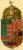

|
 | „Laci
te,
Hallod-e?
Jer ide,
Jer, ha mondom,
Rontom-bontom”
Régen mi az
iskolában a labdával kidobóztunk. Jó játék volt, néha fájt egy kicsit, de szerettük. Én
jobban szerettem csak elugrani a támadások elől, a védekezést szervezni, mert nem dobtam valami
ügyesen, pontosabban jól értékeltem, hogy jobb dobóink vannak, így átengedtem nekik a terepet.
Aztán meguntuk. Hazamentünk.
Szerintem dobálózásra leginkább a labda való. Abból
is az a piros, fehér pöttyökkel ékesített olcsó gumilabda. Szavakkal nem szerettem
dobálózni, és ez azóta sem változott. Azt vettem észre, hogy a szavak nagyon gyorsan
kopnak. Elég rosszul járnak a megbízhatatlan emberek, mert egy-két be nem tartott ígéret
is elég a bizalom elvesztéséhez. Legalábbis jobb körökben így szokás.
Ahogyan
szépen elkopott a fasisztázás, meg a minden bokorban nácit látás (bár kétségtelenül
néhány szerényebb képességű még próbálkozik az unalmas lózungokkal), úgy kopnak a mi
szép szavaink is. Forradalom lesz, meg felkelés a jövő héten, emberek, tessék beleírni a
naptárba! Már megint?
Hát nem tanulunk mi semmit?
„Ülj meg itten az ölemben,
De ne moccanj, mert különben
Meg talállak
csípni,
Igy
ni!
Ugye
fáj?” Repül a Molotov, ki tudja, hol
áll meg? Ahogyan nő a tüntetések száma, fogy a tömeg. Fázik, éhes, unja már. Azt hitte, a
tüntetés olyan, hogy attól megváltozik valami. Ez így is van egy egészséges országban,
hisz ez a végső békés eszköz. De pont azok várnak egy demokratikus módszertől megoldást,
akik azt mondják, itt már nem működnek a demokratikus eszközök. Akkor erőszakos lesz; de
ettől is fogy. Elviszik a rendőrök. Bemenetel a csapdába, de bent is marad, mert nincs
senki, aki kihozná. Attól még börtönben marad a megvezetett harcos, ha vezetői hőssé
nyilvánítják. A Molotov lángja elalszik, de a tömeg magát szalámizza. Az átlagember
meg nagyon hülye. Nagyon utálom az átlagembert, mert olyan hülye. Látja, hogy megáll a
villamospótló busz, de csak áll a villamosmegállóban. Megállítja valaki a mozgólépcsőt,
ő meg csak bambul maga elé, hogy ez most nem működik, akkor mit kell tenni? Meg sem
moccan, föl sem sétál. A mozgólépcsőn nem szabad mozogni, hiszen mozog az
magától! Akármilyen hülye, szavazni sajnos el tud menni. Ezek az emberek viszont
választók. Nem mindig tudom, hogyan lehet megszólítani őket, mert alig értem a primitív
beszédüket és szükségleteiket sem érzem, de azt tudom, hogy eddig nem hozzájuk
szóltunk. „Hát ne kiabálj.
Szájadat betedd,
S nyisd ki füledet,
Nyisd ki ezt a kis
kaput;
Majd meglátod,
hogy mi fut
Rajta át
fejedbe...” „Ha csináltad, fizesd is ki,” ha
csinálod: csináld is jól! De elmúlt az ideje a semmittevésnek és annak is, hogy pusztán
érzelmekre hatva szólunk. Már minden mondatunk mögött tartalomnak is kell lennie, mert a
huszonnegyedik órából célegyenest is csinálhatunk még! Ha el nem szúrjuk. És végre
vállalnunk kell a felelősséget, melyet nem botütésben, hanem becsületünkön ejtett
sebekben kell kifizetnünk. Mindannyiunk közös célja kellene, hogy legyen az
együttműködés, de talán még a cinkos hallgatás is egymásról. Csakhogy ez kétoldalú játék: ha
valakinél hibádzik a rendszer, borul a hagymázas képzelgés a közös munka gyümölcseiről, aztán
meg már el sem lehet dönteni, hogy ki kezdte. Nem is kell eldönteni, mert ez lényegtelen: a
lényeg az, hogy ki fejezi be ezt a nagy játékot. A nagy játék befejezéséhez azonban előbb a
saját kicsike játékainkat kell feladnunk. Én csak azzal vagyok hajlandó haladni, aki meghozza
ezt az áldozatot.
Ezt a glosszát a Konkretum legutóbbi bejegyzése ihlette.
Attól
azonban független, nem biztos, hogy a szerző azzal maradéktalanul
egyetért. | | vissza a főoldalra |  |
| 1 2 3 4 5 6 | |  | | | | | | | | | | 

|
| | | | | | | | | | | | 1 2 3 4 5 6 |  |
|


túraszervező
túra-rss
mi ez?

legjobbak
legolvasottabbak
tartalomjegyzék
rss feed

AboryM
Caesar
Count Grishnackh
cscsabi
eürdüngh
Feki
GyalogKakukk
Ishukone
Kadzseszka
LACI1993
Mini
Muska
Rommel
Segi
Takezó
tommylee
vikcee
|
BlogGép 1.1 (C) 2007-2009 tomcat
nem adom
hülye kérdések elott olvasd el a faq-t
minden, a bombagyar.hu-n és aloldalain közölt tartalom újraközléséhez
a szerkesztõk írásos beleegyezése szükséges
az olvasói kommentárok és levelek nem feltétlenül a szerkesztõk véleményét tükrözik
házirend elolvasása